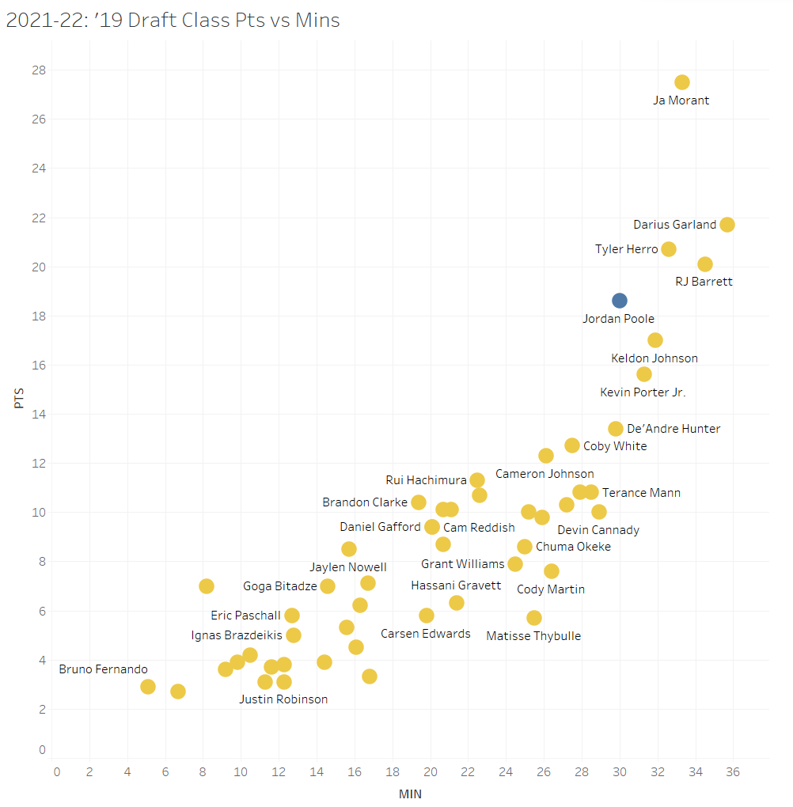

It's a Poole Party
By Andrew Zhang | May 18, 2022

As a Warriors fan, I am always following the team, and one player that has taken a massive jump from last year is Jordan Poole. The third-year guard from Michigan has increased his averages across the board, while becoming a more efficient offensive player. From watching games in years prior, especially in his rookie year, Poole was prone to jacking shots and his shooting efficiency was poor. With his stunning improvement this season, I sought out to visualize his stats to see the differences over his first 3 years in the NBA. Additionally, I analyzed advanced metrics to quantify his impact on the team when he is on the floor.
First, I plotted average points against minutes on a per game basis from the 2020-21 season, with data consisting only of sophomores from the 2019 NBA draft class. I highlighted the data point belonging to Jordan Poole. There seems to be a general linear correlation between points and minutes, and Poole was right in the middle of the pack of his draft class last season. Fast forward to this season, and there are noticeable differences in the distribution of the data. The top scorers of the class (eg. Ja Morant, Darius Garland, Tyler Herro, etc.) have generally increased their points per game averages, corresponding to an upwards shift in the data points on the far right of the graph. One of the biggest risers is Poole, second only to Ja Morant.
We can visualize scoring improvement among members of the draft class with a histogram, filtering for players who played both the 2020-21 season and 2021-22 season (this excludes players like Zion who didn’t play this season).
Among players in his class, Poole is in an elite group, with only Ja Morant, RJ Barrett, Darius Garland, Tyler Herro, and Coby White having scored more points per minute this season than him. This is great company to be in for third-year guards, but the graph doesn’t even tell the whole story. In his first 2 seasons, though there were flashes of promise, Poole’s scoring and efficiency was subpar (shooting 33% from the field and 28% from 3-point land). He was sent to the G-League affiliate Santa Cruz Warriors often and did not have as many opportunities as he did this year.
This year the difference is stark. Not only has Poole improved as an offensive player across the board, but he led the league in free throw percentage this season at a 92.5% clip, besting his teammate Steph Curry.
We can visualize his progress in shooting efficiency and aggression over his career thus far with points from drives, catch and shoot shots, and pull up shots.
It’s interesting to observe that Poole’s shooting averages are similar to the 2020-21 season. However, his points scored in every category are higher, indicating that he is capitalizing on increased playing time while maintaining his previous year’s efficiency. The most dramatic increase comes in shots from pull up points, where he has 4.6 per game this season, double the amount of points from seasons prior. This is likely due to more of the offense running through Poole, which happens when Curry and Klay are not on the court. He has grown into his scoring role, which is highlighted by the drop-off in the percentage of his field goals that are assisted (41.4% of his 2-pointers and 70.6% of his 3-pointers are assisted, down from 61.1% and 89.7% last year).
His contributions to the Warriors season overall can be visualized through win shares, which are the estimated number of wins a player contributes to the team over the course of the season. Just from watching his rookie year tape, it could be seen that Poole had a tendency to jack up shots and had poor efficiency. The negative win shares Poole had shows that he actually brought down the team by doing so. The impact his training time with the Santa Cruz Warriors had on his development can be seen in the jump in win shares this season. Overall, Poole has become a better shooter and is able to hit the tough shots he missed earlier in his career. He has become a better team player too, with 4 assists per game now and some crazy highlight reel dimes. Poole is not just a scorer but also a facilitator now, which makes the Warriors new “death” lineup of Poole, Curry, Thompson, Wiggins, and Draymond even more dangerous.
The Warriors have plenty of young talent on the roster (from last year’s second overall pick James Wiseman to lottery pick Jonathan Kuminga this year). Though the old stars like Steph are still playing at a high level, the younger players are balling out too. This bodes well for the future of the franchise, even as the Warriors are once again contending for a NBA championship.
Reflecting on Poole’s season, the 2021-22 regular season is the first big jump of his young career. Though Poole ultimately did not end up as a MIP finalist (Ja Morant is the clear frontrunner and Vegas favorite as of the writing of this article), he will continue to be in contention in future seasons. The ceiling is sky high for Poole, and he will run the show in San Francisco for years to come.